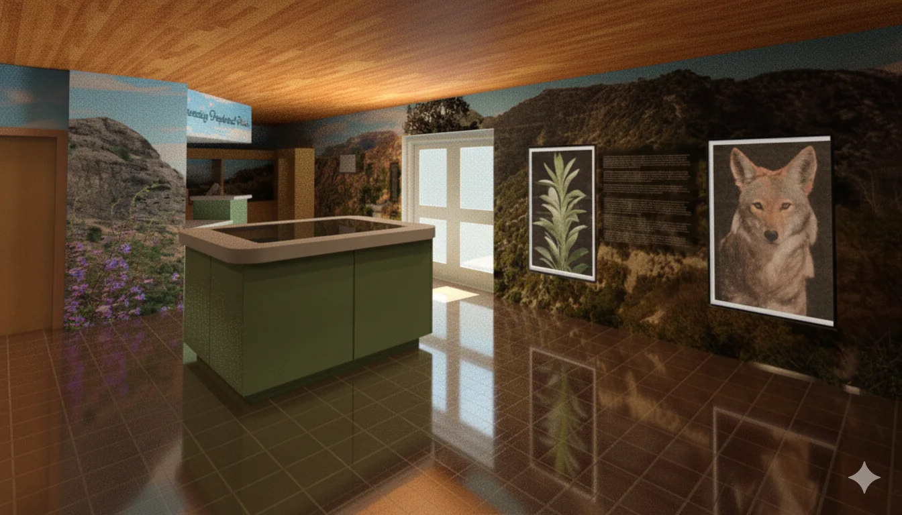
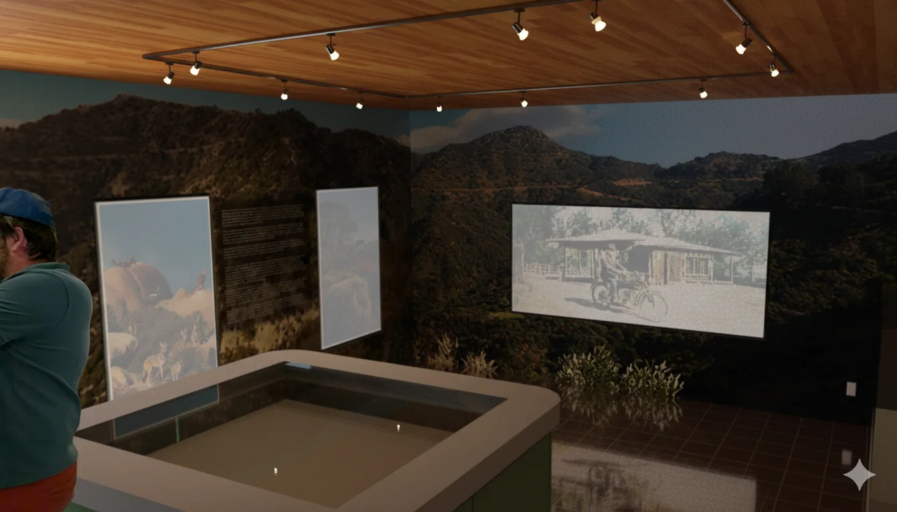
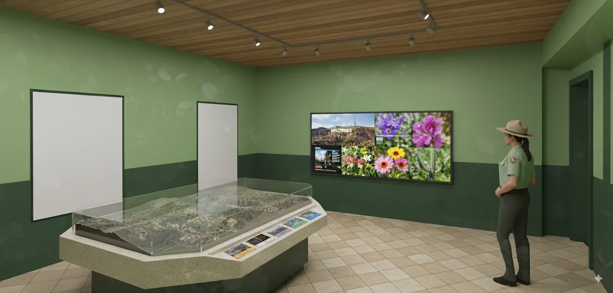
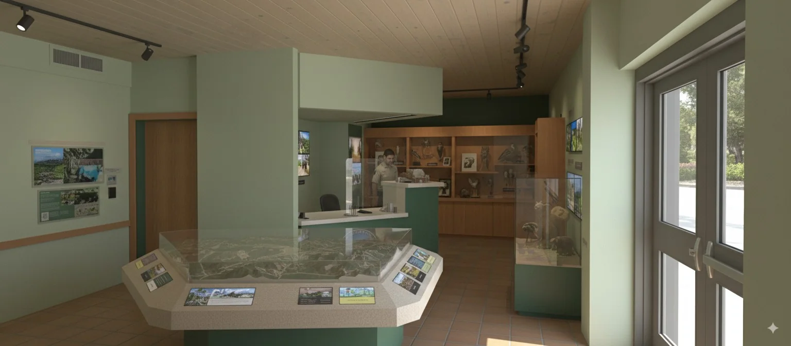
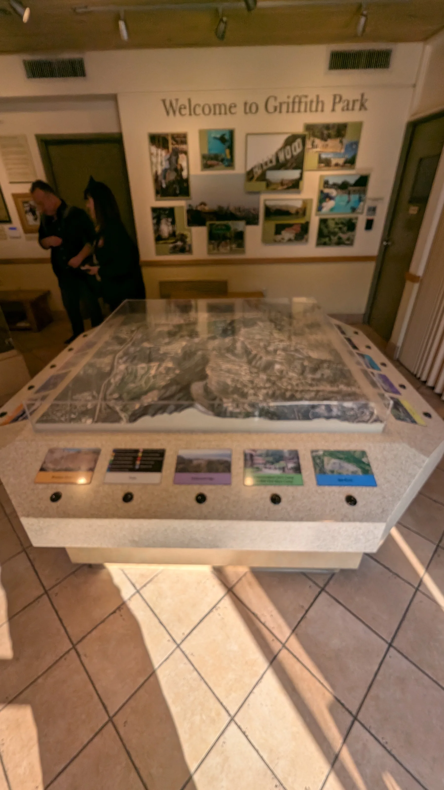
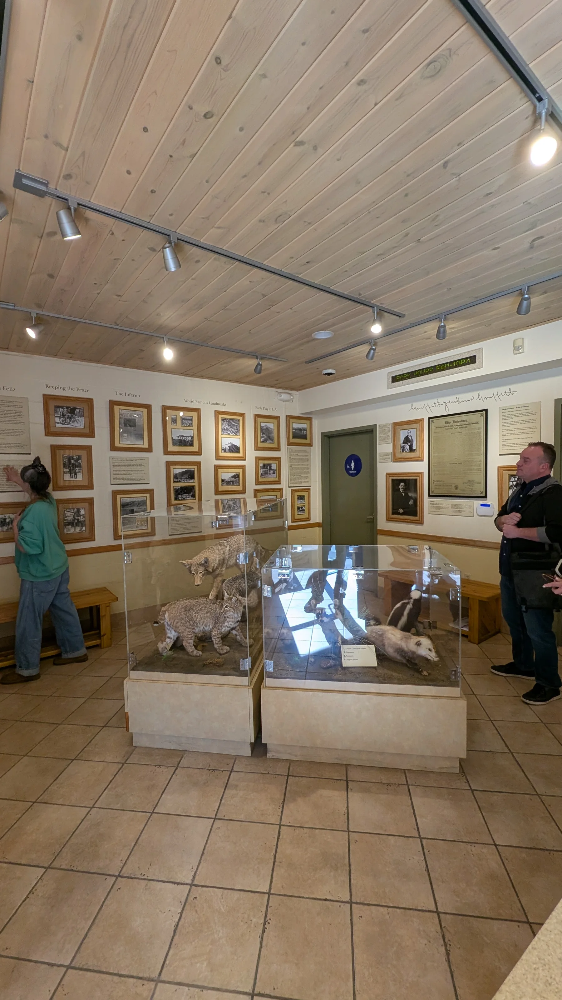
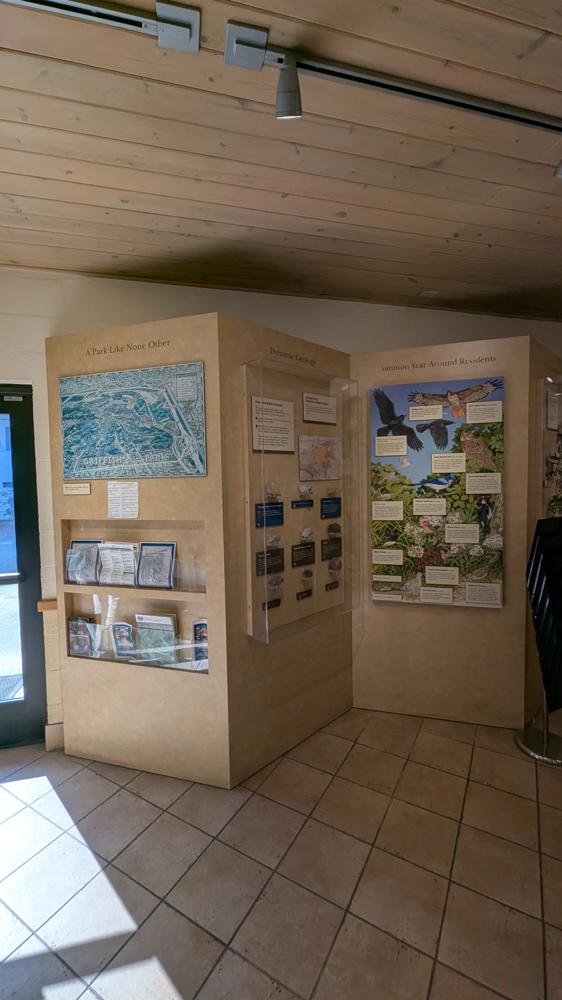

Griffith Park Visitor Center
A redesign study for the visitor center that rethinks the existing exhibition room as a clearer, more immersive introduction to the landscape, ecology and history of Griffith Park.

Interpretation as part of the room
The design works with the existing visitor center footprint while replacing a collection of disconnected display moments with a more coherent visitor sequence.
Map tables, wall graphics, display surfaces and digital media are treated as architectural elements rather than objects added after the room is designed.




Existing room → new visitor sequence
Documenting the existing exhibition was part of the design process. The photographs below show the conditions that informed the new layout, sight lines, information hierarchy and digital media opportunities.


